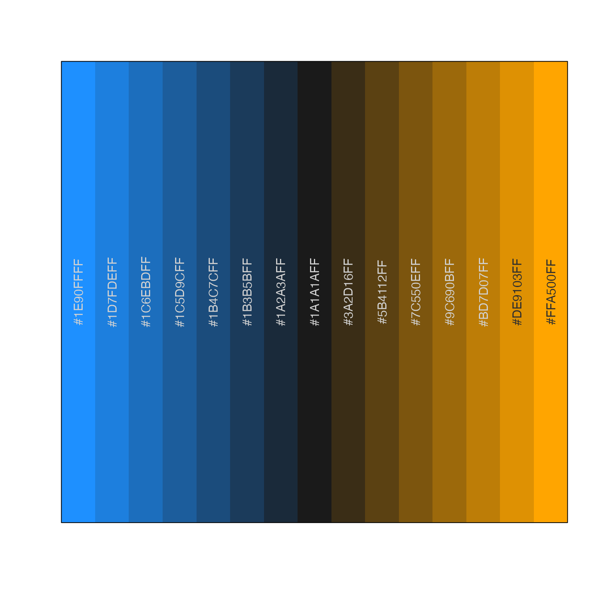
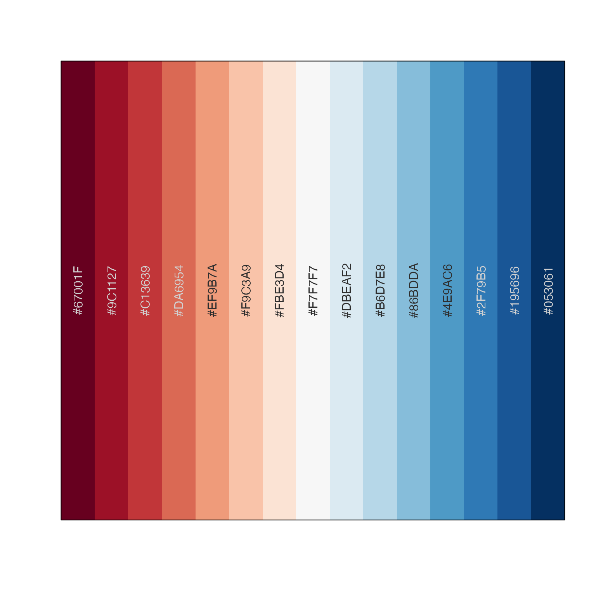
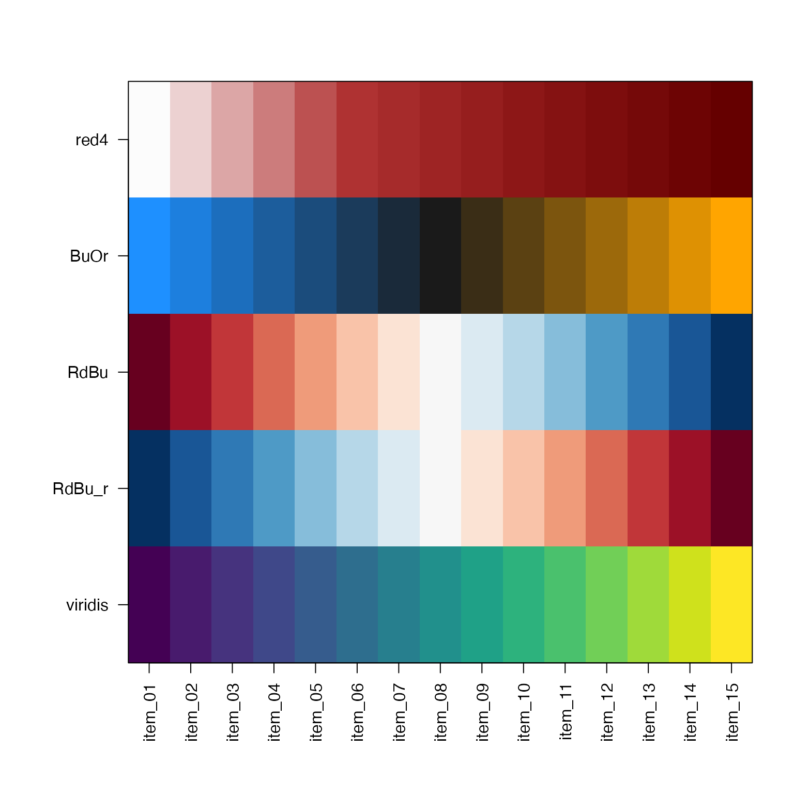
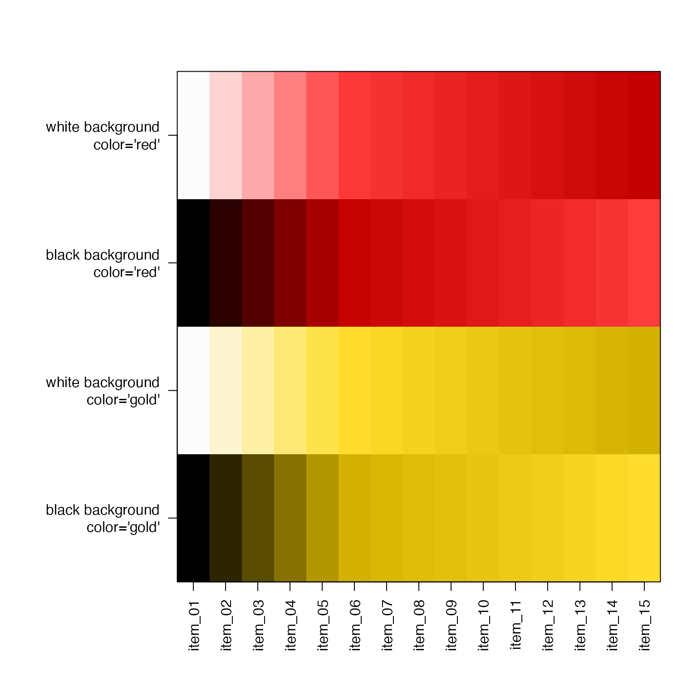
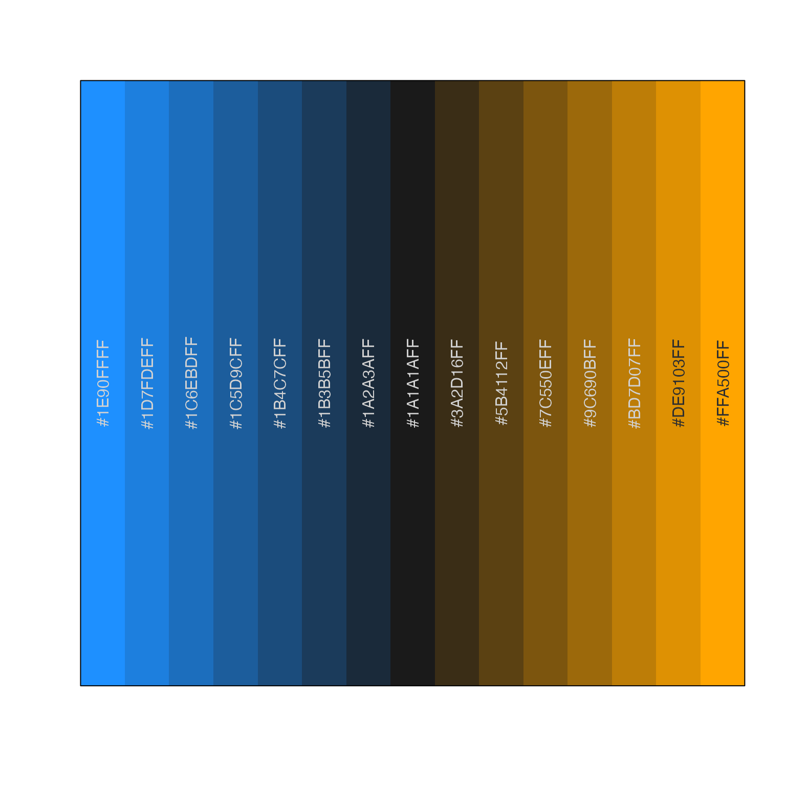
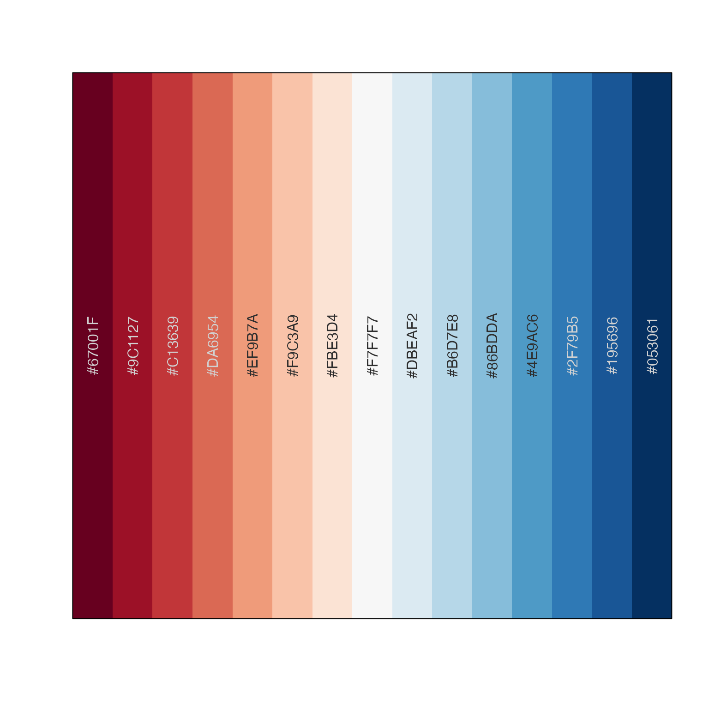
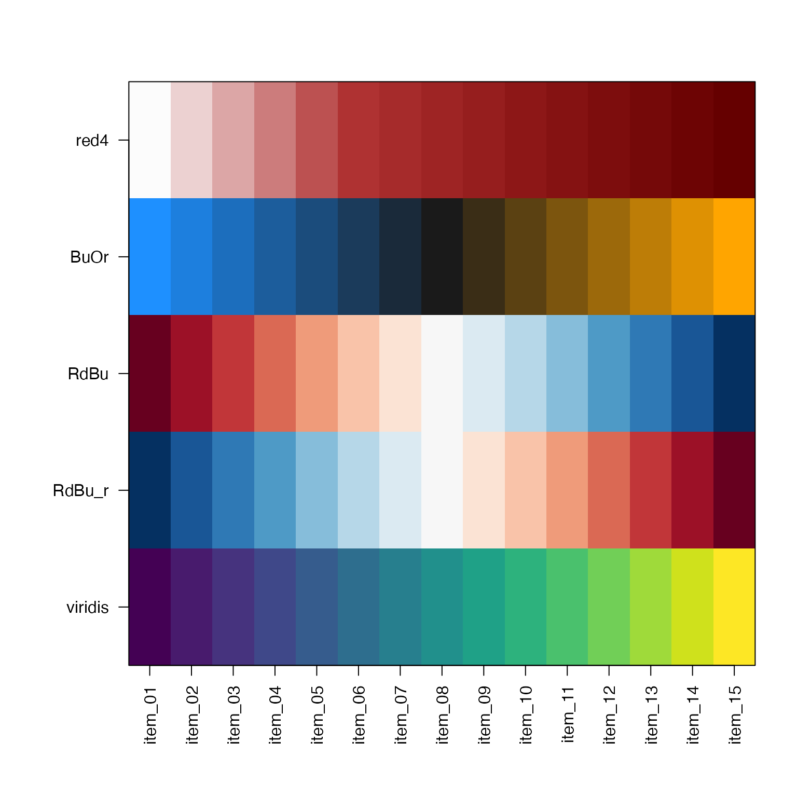
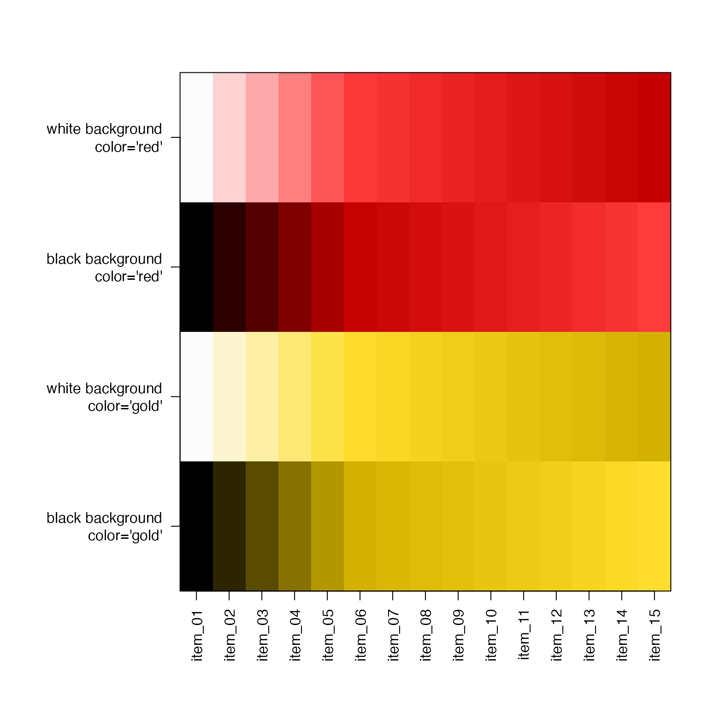

get color ramp by name, color, or function
Usage
getColorRamp(
col,
n = 15,
trimRamp = c(0, 0),
gradientN = 15,
defaultBaseColor = "grey99",
reverseRamp = FALSE,
alpha = TRUE,
gradientWtFactor = NULL,
dex = 1,
lens = 0,
divergent = NULL,
verbose = FALSE,
...
)Arguments
- col
one of the following:
charactervector of two or more R colors. A color gradient will be defined using these colors in order withcolorRampPalette().charactervector length=1 with one R color. A color gradient is defined fromdefaultBaseColortocolusingcolor2gradient(). To adjust the range of light to dark luminance, use thedexargument, where higher values increase the range, and lower values decrease the range.charactervector length=1, with one recognized color ramp name: any color palette from RColorBrewer, for examplerownames(RColorBrewer::brewer.pal.info()); any color palette function name fromviridisLite.charactervector length=1, with one color function name, for examplecol="rainbow_hcl". Input is equivalent to supplying one colorfunction, see below.functionwhose first argument expectsintegernumber of colors to return, for examplecol=viridisLite::viridisdefines the function itself as input.functionderived fromcirclize::colorRamp2(), recognized by having attribute names"breaks"and"colors". Note that only the colors are used for the individual color values, not the break points.
- n
integernumber of output colors to return, or NULL if the output should be a color function in the formfunction(n)which returnsncolors.- trimRamp
integervector, expanded to length=2 as needed, which defines the number of colors to trim from the beginning and end of the color vector, respectively. WhenreverseRamp=TRUE, the colors are reversed before the trimming is applied. If the twotrimRampvalues are not identical, symmetric divergent color scales will no longer be symmetric.- gradientN
integernumber of colors to expand gradient colors prior to trimming colors.- defaultBaseColor
charactervector indicating a color from which to begin a color gradient, only used when col is a single color.- reverseRamp
logicalindicating whether to reverse the resulting color ramp. This value is ignored when a single value is supplied for col, and where "_r" or "_rev" is detected as a substring at the end of the character value.- alpha
logicalindicating whether to honor alpha transparency whenevercolorRampPaletteis called. If colors contain no alpha transparency, this setting has no effect, otherwise the alpha value is applied bygrDevices::colorRampPalette()using a linear gradient between each color.- gradientWtFactor
numericvalue used to expand single color input to a gradient, usingcolor2gradient(), prior to making a full gradient to thedefaultBaseColor. Note thatdexis the preferred method for adjusting the range of light to dark for the given colorcol.- dex
numericdarkness expansion factor, used only with inputcolis a single color, which is then split into a color gradient usingdefaultBaseColorby callingcolor2gradient(). Thedexfactor adjusts the range of dark to light colors, where higher values fordexincrease the range, making the changes more dramatic.- lens, divergent
arguments sent to
warpRamp()to apply a warp effect to the color ramp, to compress or expand the color gradient:lensscales the warp effect, with positive values compressing colors toward baseline and negative values expanding colors near baseline;divergentis a logical indicating whether the middle color is considered the baseline.- verbose
logicalwhether to print verbose output- ...
additional arguments are ignored.
Details
This function accepts a color ramp name, a single color, a vector of colors, or a function names, and returns a simple vector of colors of the appropriate length, suitable as input to a number of plotting functions.
When n is NULL, this function returns a color function,
wrapped by grDevices::colorRampPalette(). The colors used
are defined by gradientN, so the grDevices::colorRampPalette()
function actually uses a starting palette of gradientN number
of colors.
When n is an integer greater than 0, this function returns
a vector of colors with length n.
When col is a single color value, a color gradient is created
by appending defaultColorBase to the output of
color2gradient(..., n=3, gradientWtFactor=gradientWtFactor).
These 4 colors are used as the internal palette before
applying grDevices::colorRampPalette() as appropriate.
In this case, gradientWtFactor is used to adjust the
strength of the color gradient. The intended use is:
getColorRamp("red", n=5). To remove the leading white
color, use getColorRamp("red", n=5, trimRamp=c(1,0)).
When col contains multiple color values, they are used
to define a color ramp directly.
When col is not a color value, it is compared to known color
palettes from RColorBrewer::RColorBrewer and viridisLite,
and will use the corresponding color function or color palette.
When col refers to a color palette, the suffix "_r" may
be used to reverse the colors. For example,
getColorRamp(col="RdBu_r", n=9) will recognize the
RColorBrewer color palette "RdBu", and will reverse the colors
to return blue to red, more suitable for heatmaps where
high values associated with heat are colored red,
and low values associated with cold are colored blue.
The argument reverseRamp=TRUE may be used to reverse the
returned colors.
Color functions from viridisLite are recognized:
"viridis", "cividis", "inferno", "magma", "plasma".
The argument trimRamp is used to trim colors from the beginning
and end of a color ramp, respectively. This mechanism is useful
to remove the first or last color when those colors may be too
extreme. Note that internally, colors are expanded to length
gradientN, then trimmed, then the corresponding n colors
are returned.
The trimRamp argument is also useful when returning a color
function, which occurs when n=NULL. In this case, colors are
expanded to length gradientN, then are trimmed using the
values from trimRamp, then the returned function can be used
to create a color ramp of arbitrary length.
Note that when reverseRamp=TRUE, colors are reversed
before trimRamp is applied.
By default, alpha transparency will be maintained if supplied in the
input color vector. Most color ramps have no transparency, in which
case transparency can be added after the fact using alpha2col().
See also
Other jam color functions:
alpha2col(),
applyCLrange(),
col2alpha(),
col2hcl(),
col2hsl(),
col2hsv(),
color2gradient(),
fixYellow(),
fixYellowHue(),
hcl2col(),
hsl2col(),
hsv2col(),
isColor(),
kable_coloring(),
makeColorDarker(),
rainbow2(),
rgb2col(),
setCLranges(),
setTextContrastColor(),
showColors(),
unalpha(),
warpRamp()
Examples
# get a gradient using red4
red4 <- getColorRamp("red4");
showColors(getColorRamp(red4));
 # make a custom gradient
BuOr <- getColorRamp(c("dodgerblue","grey10","orange"));
showColors(BuOr);

colorList <- list(red4=red4, BuOr=BuOr);
# From RColorBrewer use a brewer name
RdBu <- getColorRamp("RdBu");
RdBu_r <- getColorRamp("RdBu_r");
colorList <- c(colorList, list(RdBu=RdBu, RdBu_r=RdBu_r));
showColors(RdBu);

if (requireNamespace("viridisLite", quietly=TRUE)) {
viridisV <- getColorRamp("viridis");
colorList <- c(colorList, list(viridis=viridisV));
}
# for fun, put a few color ramps onto one plot
showColors(colorList, cexCellnote=0.7);

showColors(list(`white background\ncolor='red'`=getColorRamp("red"),
`black background\ncolor='red'`=getColorRamp("red", defaultBaseColor="black"),
`white background\ncolor='gold'`=getColorRamp("gold"),
`black background\ncolor='gold'`=getColorRamp("gold", defaultBaseColor="black")))

# make a custom gradient
BuOr <- getColorRamp(c("dodgerblue","grey10","orange"));
showColors(BuOr);

colorList <- list(red4=red4, BuOr=BuOr);
# From RColorBrewer use a brewer name
RdBu <- getColorRamp("RdBu");
RdBu_r <- getColorRamp("RdBu_r");
colorList <- c(colorList, list(RdBu=RdBu, RdBu_r=RdBu_r));
showColors(RdBu);

if (requireNamespace("viridisLite", quietly=TRUE)) {
viridisV <- getColorRamp("viridis");
colorList <- c(colorList, list(viridis=viridisV));
}
# for fun, put a few color ramps onto one plot
showColors(colorList, cexCellnote=0.7);

showColors(list(`white background\ncolor='red'`=getColorRamp("red"),
`black background\ncolor='red'`=getColorRamp("red", defaultBaseColor="black"),
`white background\ncolor='gold'`=getColorRamp("gold"),
`black background\ncolor='gold'`=getColorRamp("gold", defaultBaseColor="black")))
